Introduction à la modélisation statistique bayésienne
Un cours en R, Stan, et brms
Ladislas Nalborczyk (LPC, LNC, CNRS, Aix-Marseille Univ)
Planning
Cours n°01 : Introduction à l’inférence bayésienne
Cours n°02 : Modèle Beta-Binomial
Cours n°03 : Introduction à brms, modèle de régression linéaire
Cours n°04 : Modèle de régression linéaire (suite)
Cours n°05 : Markov Chain Monte Carlo
Cours n°06 : Modèle linéaire généralisé
Cours n°07 : Comparaison de modèles
Cours n°08 : Modèles multi-niveaux
Cours n°09 : Modèles multi-niveaux généralisés
Cours n°10 : Data Hackathon
Rappels
Principes de l’analyse bayésienne :
- On dispose d’un ensemble de données à analyser
- On suppose un modèle génératif défini par un ensemble de paramètres
- On dispose d’une connaissance a priori quant à la valeur de ces paramètres
The first idea is that Bayesian inference is reallocation of credibility across possibilities. The second foundational idea is that the possibilities, over which we allocate credibility, are parameter values in meaningful mathematical models (Kruschke, 2015).
Rappels
Inférence bayésienne : On infère (ou plutôt on déduit) la probabilité que le paramètre ait telle ou telle valeur sachant les données (et le prior) via le théorème de Bayes.
\[ \color{purple}{p(\theta | y)} = \frac{\color{orangered}{p(y | \theta)}\ \color{steelblue}{p(\theta)}}{\color{green}{p(y)}} \propto \color{orangered}{p(y | \theta)}\ \color{steelblue}{p(\theta)} \]
Objectif de l’analyse de données bayésienne : Faire évoluer une connaissance a priori sur les paramètres \(\color{steelblue}{p(\theta)}\) en une connaissance a posteriori \(\color{purple}{p(\theta | y)}\), intégrant l’information contenue dans les nouvelles données via \(\color{orangered}{p(y | \theta)}\).
Rappels
Les étapes de l’analyse de données bayésienne :
1. Définir le modèle - Identifier les paramètres du modèle génératif, définir une distribution a priori pour ces paramètres.
2. Mettre à jour le modèle - Calculer la distribution a posteriori des paramètres (ou une bonne approximation).
3. Interpréter la distribution postérieure - Comparaison de modèles, estimation des paramètres, vérification des prédictions du modèle.
Objectif du cours : Illustrer les différentes étapes de cette démarche à l’aide d’un modèle simple (un seul paramètre), le modèle Beta-Binomial.
Le modèle Beta-Binomial
Pourquoi ce modèle ?
Le modèle Beta-Binomial couvre un grand nombre de problèmes de la vie courante :
- Réussite / échec à un test
- Présence / absence d’effets secondaires lors du test d’un médicament
C’est un modèle simple
- Un seul paramètre
- Solution analytique
Loi de Bernoulli
S’applique à toutes les situations où le processus de génération des données ne peut résulter qu’en deux issues mutuellement exclusives (e.g., un lancer de pièce). À chaque essai, si on admet que \(\Pr(\text{face}) = \theta\), alors \(\Pr(\text{pile}) = 1 - \theta\).
Depuis Bernoulli, on sait calculer la probabilité du résultat d’un lancer de pièce, du moment que l’on connait le biais de la pièce \(\theta\). Admettons que \(Y = 0\) lorsqu’on obtient pile, et que \(Y = 1\) lorsqu’on obtient face. Alors \(Y\) est distribuée selon une loi de Bernoulli :
\[p(y \ | \ \theta) = \Pr(Y = y \ | \ \theta) = \theta^{y} (1 - \theta)^{(1 - y)}\]
En remplaçant \(y\) par \(0\) ou \(1\), on retombe bien sur nos observations précédentes :
\[\Pr(Y = 1 \ | \ \theta) = \theta^{1} (1 - \theta)^{(1 - 1)} = \theta \times 1 = \theta\]
\[\Pr(Y = 0 \ | \ \theta) = \theta^{0} (1 - \theta)^{(1 - 0)} = 1 \times (1 - \theta) = 1 - \theta\]
Schéma de Bernoulli
Si l’on dispose d’une suite de lancers \(\{Y_i\}\) indépendants et identiquement distribués (i.e., chaque lancer a une distribution de Bernoulli de probabilité \(\theta\)), l’ensemble de ces lancers peut être décrit par une distribution binomiale.
Par exemple, imaginons que l’on dispose de la séquence de cinq lancers suivants : Pile, Pile, Pile, Face, Face. On peut recoder cette séquence en \(\{0, 0, 0, 1, 1\}\).
Rappel : La probabilité de chaque \(1\) est \(\theta\) est la probabilité de chaque \(0\) est \(1 - \theta\).
Quelle est la probabilité d’obtenir 2 faces sur 5 lancers ?
Schéma de Bernoulli
Sachant que les essais sont indépendants les uns des autres, la probabilité d’obtenir cette séquence est de \((1 - \theta) \times (1 - \theta) \times (1 - \theta) \times \theta \times \theta\), c’est à dire : \(\theta^{2} (1 - \theta)^{3}\).
On peut généraliser ce résultat pour une séquence de \(n\) lancers et \(y\) “succès” :
\[\theta^{y} (1 - \theta)^{n - y}\]
Mais, jusque là on a considéré seulement une seule séquence résultant en 2 succès pour 5 lancers, mais il existe de nombreuses séquences pouvant résulter en 2 succès pour 5 lancers (e.g., \(\{0, 0, 1, 0, 1\}\), \(\{0, 1, 1, 0, 0\}\))…
Coefficient binomial
Le coefficient binomial nous permet de calculer le nombre de combinaisons possibles résultant en \(y\) succès pour \(n\) lancers de la manière suivante (lu “\(y\) parmi \(n\)” ou “nombre de combinaisons de \(y\) parmi \(n\)”) :
\[ \left(\begin{array}{l} n \\ y \end{array}\right) = C_{n}^{y} = \frac{n !}{y !(n - y) !} \]
Par exemple pour \(y = 1\) et \(n = 3\), on sait qu’il existe 3 combinaisons possibles : \(\{0, 0, 1\}, \{0, 1, 0\}, \{1, 0, 0\}\). On peut vérifier ça par le calcul, en appliquant la formule ci-dessus.
\[ \left(\begin{array}{l} 3 \\ 1\end{array}\right) = C_{1}^{3} = \frac{3 !}{1 !(3 - 1) !} = \frac{3 \times 2 \times 1}{1 \times 2 \times 1} = \frac{6}{2} = 3 \]
[1] 3Loi binomiale
\[p(y \ | \ \theta) = \Pr(Y = y \ | \ \theta) = \left(\begin{array}{l} n \\ y \end{array}\right) \theta^{y}(1 - \theta)^{n - y}\]
La loi binomiale nous permet de calculer la probabilité d’obtenir \(y\) succès sur \(n\) essais, pour un \(\theta\) donné. Exemple de la distribution binomiale pour une pièce non biaisée (\(\theta = 0.5\)), indiquant la probabilité d’obtenir \(n\) faces sur 10 lancers (en R: dbinom(x = 0:10, size = 10, prob = 0.5)).
Générer des données à partir d’une distribution binomiale
library(tidyverse)
set.seed(666) # for reproducibility
rbinom(n = 500, size = 1, prob = 0.6) %>% # theta = 0.6
data.frame %>%
mutate(x = seq_along(.), y = cumsum(.) / seq_along(.) ) %>%
ggplot(aes(x = x, y = y), log = "y") +
geom_line(lwd = 1) +
geom_hline(yintercept = 0.6, lty = 2) +
labs(x = "Nombre de lancers", y = "Proportion de faces") +
ylim(0, 1)Définition du modèle (likelihood)
Fonction de vraisemblance (likelihood)
- Nous considérons \(y\) comme étant le nombre de succès
- Nous considérons le nombre d’observations \(n\) comme étant une constante
- Nous considérons \(\theta\) comme étant le paramètre de notre modèle (i.e., la probabilité de succès)
La fonction de vraisemblance s’écrit de la manière suivante :
\[ \color{orangered}{\mathcal{L}(\theta\ |\ y, n) = p(y \ |\ \theta, n) = \left(\begin{array}{l} n \\ y \end{array}\right) \theta^{y}(1 - \theta)^{n - y} \propto \theta^{y}(1 - \theta)^{n - y}} \]
Vraisemblance versus probabilité
On lance à nouveau une pièce de biais \(\theta\) (où \(\theta\) représente la probabilité d’obtenir Face). On lance cette pièce deux fois et on obtient une Face et un Pile.
On peut calculer la probabilité de ces données selon (i.e., en fonction de) différentes valeurs de \(\theta\) de la manière suivante :
\[ \begin{aligned} \Pr(F, P \ | \ \theta) + \Pr(P, F \ | \ \theta) &= 2 \times \Pr(P \ | \ \theta) \times \Pr(F \ | \ \theta) \\ &= \theta(1 - \theta) + \theta(1 - \theta) \\ &= 2 \theta(1 - \theta) \end{aligned} \]
Cette probabilité est définie pour un jeu de données fixe et une valeur de \(\theta\) variable. On peut représenter cette fonction visuellement.
Vraisemblance versus probabilité
# Représentation graphique de la fonction de vraisemblance de theta pour y = 1 et n = 2
y <- 1 # nombre de faces
n <- 2 # nombre d'essais
data.frame(theta = seq(from = 0, to = 1, length.out = 1e3) ) %>%
mutate(likelihood = dbinom(x = y, size = n, prob = theta) ) %>%
ggplot(aes(x = theta, y = likelihood) ) +
geom_area(color = "orangered", fill = "orangered", alpha = 0.5) +
xlab(expression(paste(theta, " - Pr(face)") ) ) + ylab("Likelihod")Vraisemblance versus probabilité
Si on calcule l’aire sous la courbe de cette fonction, on obtient :
\[\int_{0}^{1} 2 \theta(1 - \theta) \mathrm{d} \theta = \frac{1}{3}\]
Quand on varie \(\theta\), la fonction de vraisemblance n’est pas une distribution de probabilité valide (i.e., son intégrale n’est pas égale à 1). On utilise le terme de vraisemblance, pour distinguer ce type de fonction des fonctions de densité de probabilité. On utilise la notation suivante pour mettre l’accent sur le fait que la fonction de vraisemblance est une fonction de \(\theta\), et que les données sont fixes : \(\mathcal{L}(\theta \ | \ data) = p(data \ | \ \theta)\).
Vraisemblance versus probabilité
Nombre de Faces (y) |
||||
|---|---|---|---|---|
| theta | 0 | 1 | 2 | Total |
| 0 | 1.00 | 0.00 | 0.00 | 1 |
| 0.2 | 0.64 | 0.32 | 0.04 | 1 |
| 0.4 | 0.36 | 0.48 | 0.16 | 1 |
| 0.6 | 0.16 | 0.48 | 0.36 | 1 |
| 0.8 | 0.04 | 0.32 | 0.64 | 1 |
| 1 | 0.00 | 0.00 | 1.00 | 1 |
| Total | 2.20 | 1.60 | 2.20 | |
Notons que la vraisemblance de \(\theta\) pour une donnée particulière est égale à la probabilité de cette donnée pour cette valeur de \(\theta\). Cependant, la distribution de ces vraisemblances (en colonne) n’est pas une distribution de probabilité. Dans l’analyse bayésienne, les données sont considérées comme fixes et la valeur de \(\theta\) est considérée comme une variable aléatoire.
Définition du modèle (prior)
Comment définir un prior dans le cas du lancer de pièce ?
Aspect sémantique \(~\rightarrow~\) le prior doit pouvoir rendre compte :
- D’une absence d’information
- D’une connaissance d’observations antérieures concernant la pièce étudiée
- D’un niveau d’incertitude concernant ces observations antérieures
Aspect mathématique \(~\rightarrow~\) pour une solution entièrement analytique :
- Les distributions a priori et a posteriori doivent avoir la même forme
- La vraisemblance marginale doit pouvoir se calculer analytiquement
La distribution Beta
\[ \begin{align} \color{steelblue}{p(\theta\ | \ a, b)} \ &\color{steelblue}{= \mathrm{Beta}(\theta\ |\ a, b)} \\ & \color{steelblue}{= \theta^{a - 1}(1 - \theta)^{b - 1} / B(a, b)} \\ & \color{steelblue}{\propto \theta^{a - 1}(1 - \theta)^{b - 1}} \end{align} \]
où \(a\) et \(b\) sont deux paramètres tels que \(a \geq 0\), \(b \geq 0\), et \(B(a, b)\) est une constante de normalisation.
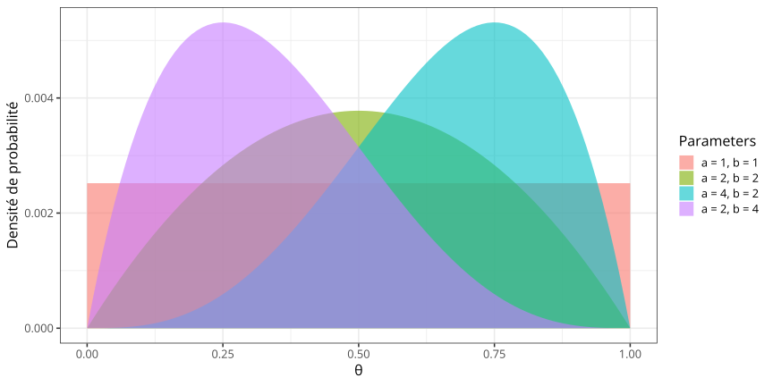Interprétation des paramètres du prior Beta
- On peut exprimer l’absence de connaissance a priori par \(a = b = 1\) (distribution orange).
- On peut exprimer un prior en faveur d’une absence de biais par \(a = b \geq 2\) (distribution verte).
- On peut exprimer un biais en faveur de Face par \(a > b\) (distribution bleue).
- On peut exprimer un biais en faveur de Pile par \(a < b\) (distribution violette).
Interprétation des paramètres du prior Beta
Le niveau de certitude augmente avec la somme \(\kappa = a + b\).
- Aucune idée sur la provenance de la pièce : \(a = b = 1\) -> prior plat.
- En attendant le début de l’expérience, on a lancé la pièce 10 fois et observé 5 “Face” : \(a = b = 5\) -> prior peu informatif.
- La pièce provient de la banque de France : \(a = b = 50\) -> prior fort.
Interprétation des paramètres du prior Beta
Supposons que l’on dispose d’une estimation de la valeur la plus probable \(\omega\) du paramètre \(\theta\). On peut reparamétriser la distribution Beta en fonction du mode \(\omega\) et du niveau de certitude \(\kappa\) :
\[ \begin{align} a &= \omega(\kappa - 2) + 1 \\ b &= (1 - \omega)(\kappa - 2) + 1 &&\mbox{pour } \kappa > 2 \end{align} \]
Si \(\omega = 0.65\) et \(\kappa = 25\) alors \(p(\theta) = \mathrm{Beta}(\theta \ | \ 15.95, 9.05)\).
Si \(\omega = 0.65\) et \(\kappa = 10\) alors \(p(\theta) = \mathrm{Beta}(\theta \ | \ 6.2, 3.8)\).

Prior conjugué
Formellement, si \(\mathcal{F}\) est une classe de distributions d’échantillonnage \(p(y|\theta)\), et \(\mathcal{P}\) est une classe de distributions a priori pour \(\theta\), alors \(\mathcal{P}\) est conjuguée à \(\mathcal{F}\) si et seulement si :
\[ p(\theta|y) \in \mathcal{P} \text{ for all } p(\cdot | \theta) \in \mathcal{F} \text{ and } p(\cdot) \in \mathcal{P} \]
(Gelman et al., 2013, p.35). En d’autres termes, un prior est appelé conjugué si, lorsqu’il est converti en une distribution a posteriori en étant multiplié par la fonction de vraisemblance, il conserve la même forme. Dans notre cas, le prior Beta est un prior conjugué pour la vraisemblance binomiale, car le posterior est également une distribution Beta.
Le résultat du produit d’un prior Beta et d’une fonction de vraisemblance Binomiale est proportionnel à une distribution Beta. On dit alors que la distribution Beta est un prior conjugué de la fonction de vraisemblance Binomiale.
Dérivation analytique de la distribution a posteriori
Soit un prior défini par : \(\ \color{steelblue}{p(\theta \ | \ a, b) = \mathrm{Beta}(a, b) \propto \theta^{a - 1}(1 - \theta)^{b - 1}}\)
Soit une fonction de vraisemblance associée à \(y\) “Face” pour \(n\) lancers : \(\ \color{orangered}{p(y \ | \ n, \theta) = \mathrm{Bin}(y \ | \ n, \theta) = \left(\begin{array}{l} n \\ y \end{array}\right) \theta^{y}(1 - \theta)^{n - y} \propto \theta^{y}(1 - \theta)^{n - y}}\)
\[ \begin{align} \color{purple}{p(\theta \ | \ y, n)} &\propto \color{orangered}{p(y \ | \ n, \theta)} \ \color{steelblue}{p(\theta)} &&\mbox{Théorème de Bayes} \\ &\propto \color{orangered}{\mathrm{Bin}(y \ | \ n, \theta)} \ \color{steelblue}{\mathrm{Beta}(\theta \ | \ a, b)} \\ &\propto \color{orangered}{\theta^{y}(1 - \theta)^{n - y}} \ \color{steelblue}{\theta^{a - 1}(1 - \theta)^{b - 1}} &&\mbox{Application des formules précédentes} \\ &\propto \color{purple}{\theta}^{\color{orangered}{y} + \color{steelblue}{a - 1}}\color{purple}{(1 - \theta)}^{\color{orangered}{n - y} + \color{steelblue}{b - 1}} &&\mbox{En regroupant les termes identiques} \\ &\propto \color{purple}{\theta^{a' - 1}(1 - \theta)^{b' - 1}} &&\mbox{Avec } a' = y + a \mbox{ et } b' = n - y + b \\ \color{purple}{p(\theta \ | \ y, n)} \ &= \color{purple}{\mathrm{Beta}(y + a, n - y + b)} \end{align} \]
Un exemple pour digérer
On observe \(y = 7\) réponses correctes sur \(n = 10\) questions. On choisit un prior \(\mathrm{Beta}(1, 1)\), c’est à dire un prior uniforme sur \([0, 1]\). Ce prior équivaut à une connaissance a priori de 0 succès et 0 échecs (i.e., prior plat).
La distribution postérieure est donnée par :
\[ \begin{align} \color{purple}{p(\theta \ | \ y, n)} &\propto \color{orangered}{p(y \ | \ n, \theta)} \ \color{steelblue}{p(\theta)} \\ &\propto \color{orangered}{\mathrm{Bin}(7 \ | \ 10, \theta)} \ \color{steelblue}{\mathrm{Beta}(\theta \ | \ 1, 1)} \\ &= \color{purple}{\mathrm{Beta}(y + a, n - y + b)} \\ &= \color{purple}{\mathrm{Beta}(8, 4)} \end{align} \]
La moyenne de la distribution postérieure est donnée par :
\[ \color{purple}{\underbrace{\frac{y + a}{n + a + b}}_{posterior}} = \color{orangered}{\underbrace{\frac{y}{n}}_{data}} \underbrace{\frac{n}{n + a + b}}_{weight} + \color{steelblue}{\underbrace{\frac{a}{a + b}}_{prior}} \underbrace{\frac{a + b}{n + a + b}}_{weight} \]
Un exemple pour digérer
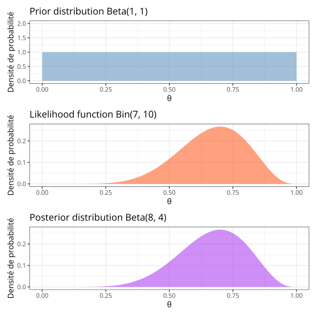Influence du prior sur la distribution postérieure
Cas \(n < a + b, (n = 10, a = 4, b = 16)\).
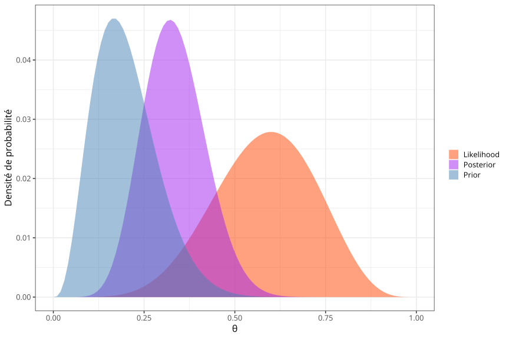Influence du prior sur la distribution postérieure
Cas \(n = a + b, (n = 20, a = 4, b = 16)\).
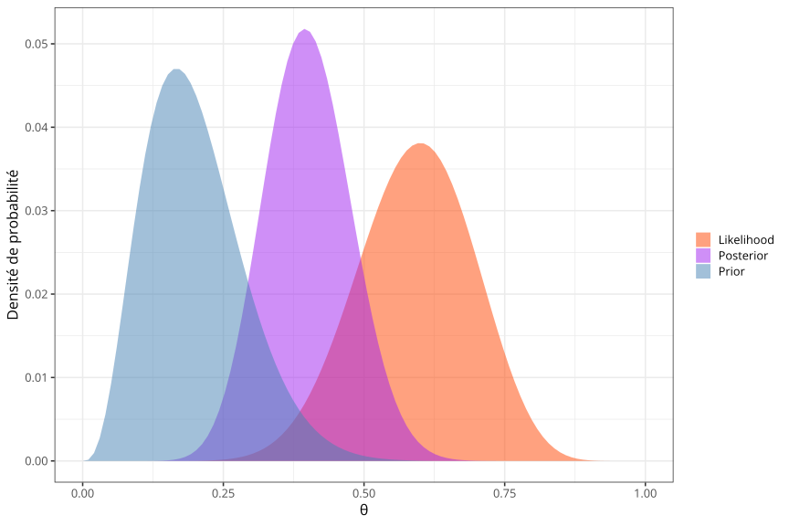Influence du prior sur la distribution postérieure
Cas \(n > a + b, (n = 40, a = 4, b = 16)\).
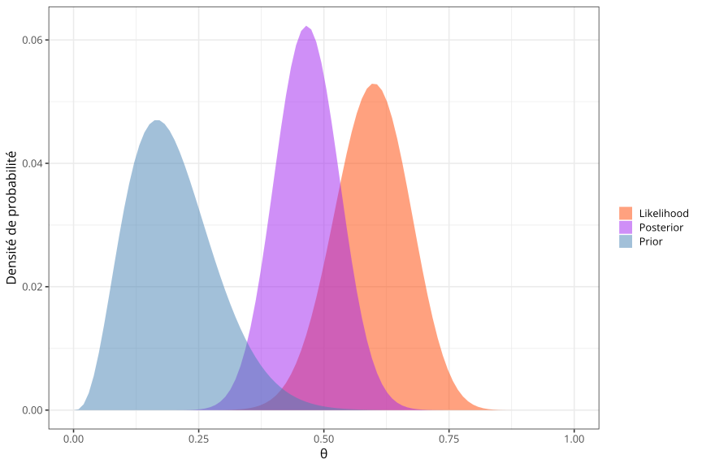Ce qu’il faut retenir
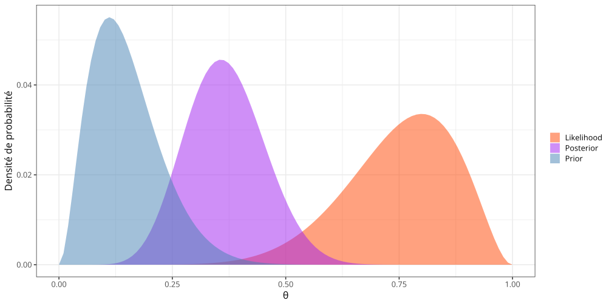The posterior distribution is always a compromise between the prior distribution and the likelihood function (Kruschke, 2015).
Ce qu’il faut retenir
Plus on a de données, moins le prior a d’influence dans l’estimation de la distribution a posteriori (et réciproquement). Attention : Lorsque le prior accorde une probabilité de 0 à certaines valeurs de \(\theta\), le modèle est incapable d’apprendre (ces valeurs sont alors considérées comme “impossibles”)…
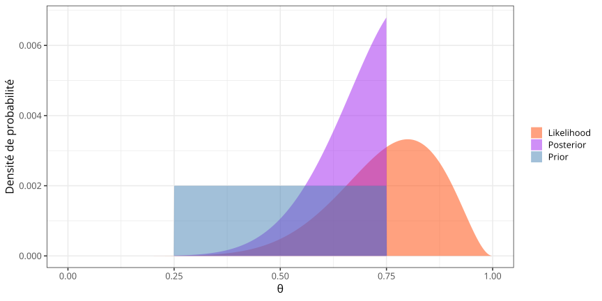La vraisemblance marginale
\[ \text{Posterior} = \frac{\text{Likelihood} \times \text{Prior}}{\text{Marginal likelihood}} \propto \text{Likelihood} \times \text{Prior} \]
\[ p(\theta | \text{data}) = \frac{p(\text{data} | \theta) \times \ p(\theta)}{p(\text{data})} \propto p(\text{data} | \theta) \times p(\theta) \]
Si on zoom sur la vraisemblance marginale (aussi connue comme evidence)…
\[ \begin{align} \color{green}{p(\text{data})} &= \int p(\text{data}, \theta) \, \mathrm d\theta &&\mbox{Marginalisation sur le paramètre } \theta \\ \color{green}{p(\text{data})} &= \color{green}{\int p(\text{data} | \theta) \times p(\theta) \, \mathrm{d} \theta} && \mbox{Application de la règle du produit} \end{align} \]
La vraisemblance marginale
Petit problème : \(p(\text{data})\) s’obtient en calculant la somme (pour des variables discrètes) ou l’intégrale (pour des variables continues) de la densité conjointe \(p(\text{data}, \theta)\) sur toutes les valeurs possibles de \(\theta\). Cela se complique lorsque le modèle comprend plusieurs paramètres continus…
Par exemple pour deux paramètres discrets :
\[ p(\text{data}) = \sum_{\theta_{1}} \sum_{\theta_{2}} p(\text{data}, \theta_{1}, \theta_{2}) \]
Et pour un modèle avec deux paramètres continus :
\[ p(\text{data}) = \int\limits_{\theta_{1}} \int\limits_{\theta_{2}} p(\text{data}, \theta_{1}, \theta_{2}) \mathrm{d} \theta_{1} \mathrm{d} \theta_{2} \]
La vraisemblance marginale
Trois méthodes pour résoudre (contourner) ce problème :
Solution analytique \(\longrightarrow\) Utilisation d’un prior conjugué (e.g., le modèle Beta-Binomial).
Solution discrétisée \(\longrightarrow\) Calcul de la solution sur un ensemble fini de points (grid method).
Solution approchée \(\longrightarrow\) On échantillonne “intelligemment” l’espace conjoint des paramètres (e.g., méthodes MCMC, Cours n°05).
Distributions discrètes
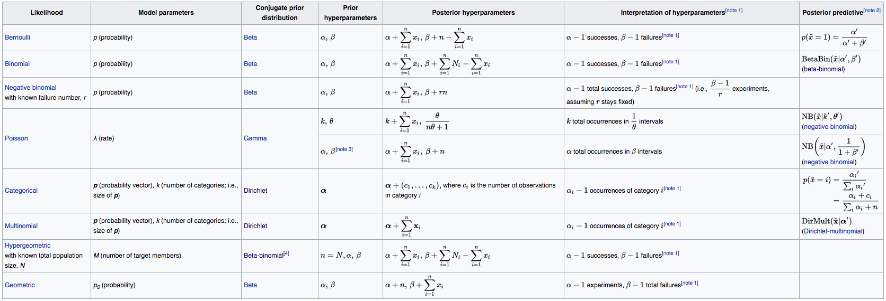Distributions continues
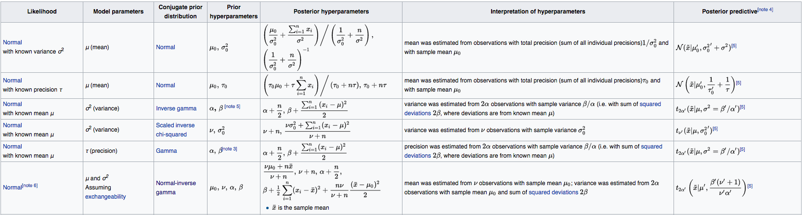Problème : Cette solution est très contraignante. Idéalement, le modèle (likelihood + prior) devrait être défini à partir de l’interprétation que l’on peut faire des paramètres de ces distributions, et non pour faciliter les calculs…
La distribution postérieure, grid method
- Définir la grille
- Calculer la valeur du prior pour chaque valeur de la grille
- Calculer la valeur de la vraisemblance pour chaque valeur de la grille
- Calculer le produit prior x vraisemblance pour chaque valeur de la grille, puis normalisation
La distribution postérieure, grid method
- Définir la grille
- Calculer la valeur du prior pour chaque valeur de la grille
- Calculer la valeur de la vraisemblance pour chaque valeur de la grille
- Calculer le produit prior x vraisemblance pour chaque valeur de la grille, puis normalisation
La distribution postérieure, grid method
- Définir la grille
- Calculer la valeur du prior pour chaque valeur de la grille
- Calculer la valeur de la vraisemblance pour chaque valeur de la grille
- Calculer le produit prior x vraisemblance pour chaque valeur de la grille, puis normalisation
La distribution postérieure, grid method
- Définir la grille
- Calculer la valeur du prior pour chaque valeur de la grille
- Calculer la valeur de la vraisemblance pour chaque valeur de la grille
- Calculer le produit prior x vraisemblance pour chaque valeur de la grille, puis normalisation
La distribution postérieure, grid method
- Définir la grille
- Calculer la valeur du prior pour chaque valeur de la grille
- Calculer la valeur de la vraisemblance pour chaque valeur de la grille
- Calculer le produit prior x vraisemblance pour chaque valeur de la grille, puis normalisation
La distribution postérieure, grid method
Problème du nombre de paramètres… En affinant la grille on augmente le temps de calcul :
- 3 paramètres avec une grille de \(10^3\) noeuds = une grille de \(10^9\) points de calcul
- 10 paramètres avec une grille de \(10^3\) noeuds = une grille de \(10^{30}\) points de calcul
Le “superordinateur” chinois Tianhe-2 réalise \(33,8 \text{×} 10^{15}\) opérations par seconde. Si on considère qu’il réalise 3 opérations par noeud de la grille, il lui faudrait \(10^{14}\) secondes pour parcourir la grille une fois (pour comparaison, l’âge de l’univers est approximativement de \((4,354 ± 0,012)\text{×}10^{17}\) secondes)…
Échantillonner la distribution postérieure
Pour échantillonner une distribution postérieure, on peut utiliser différentes implémentations des méthodes MCMC (e.g., Metropolis-Hastings, Gibbs, Hamilton, cf. Cours n°05).
En pratique :
p_grid <- seq(from = 0, to = 1, length.out = 1000) # creates a grid
prior <- rep(1, 1000) # uniform prior
likelihood <- dbinom(y, size = n, prob = p_grid) # computes likelihood
posterior <- (likelihood * prior) / sum(likelihood * prior) # computes posterior
samples <- sample(posterior, size = 1e3, prob = posterior, replace = TRUE) # sampling
hist(samples, main = "", xlab = expression(theta), cex.axis = 1, cex.lab = 1.5) # histogram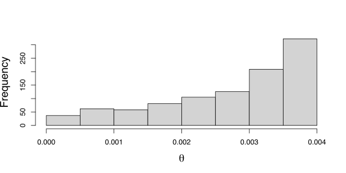
Échantillonner la distribution postérieure
La précision de l’approximation dépend de la taille de l’échantillon…
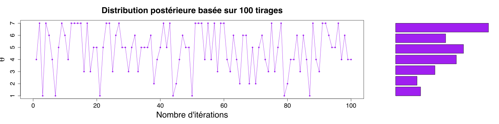
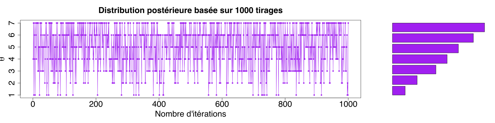
La distribution postérieure, résumé
Cas analytique :
Grid method :
La distribution postérieure, résumé
Méthode analytique
- La distribution postérieure est décrite explicitement
- Le modèle est fortement contraint
Méthode Grid
- La distribution postérieure n’est donnée que pour un ensemble fini de valeurs
- Plus la grille est fine, meilleure est l’estimation de la distribution postérieure
- Compromis Précision - Temps de calcul
Utiliser les échantillons pour résumer la distribution postérieure
Estimation de la tendance centrale : À partir d’un ensemble d’échantillons d’une distribution postérieure, on peut calculer la moyenne, le mode, et la médiane. Par exemple pour un prior uniforme, 10 lancers, et 3 Faces.

Utiliser les échantillons pour résumer la distribution postérieure
Quelle est la probabilité que le biais de la pièce \(\theta\) soit supérieur à 0.5 ?
Highest density interval (HDI)
Highest density interval (HDI) :
- Le HDI indique les valeurs du paramètre qui sont les plus probables (sachant les données et le prior)
- Plus le HDI est étroit et plus le degré de certitude est élevé
- La largeur du HDI diminue avec l’augmentation du nombre de mesures
Définition : les valeurs du paramètre \(\theta\) contenues dans un HDI à 89% sont telles que \(p(\theta) > W\) où \(W\) satisfait la condition suivante :
\[\int_{\theta \ : \ p(\theta) > W} p(\theta) \, \mathrm{d} \theta = 0.89.\]
Highest density interval (HDI)
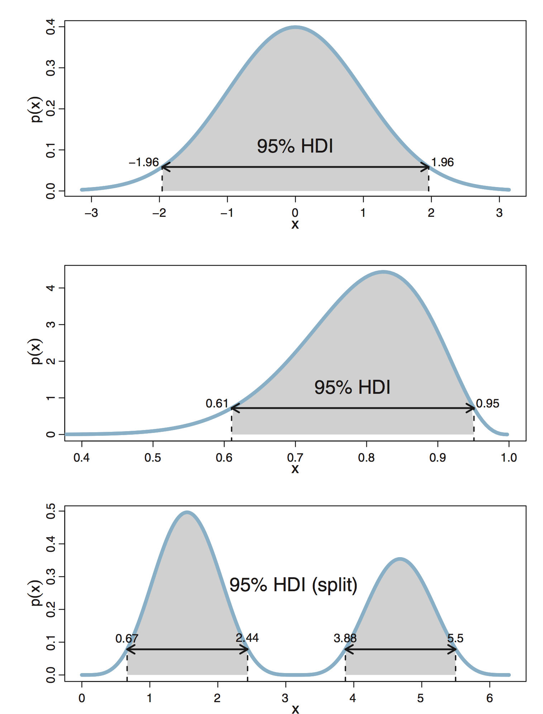Highest density interval (HDI)
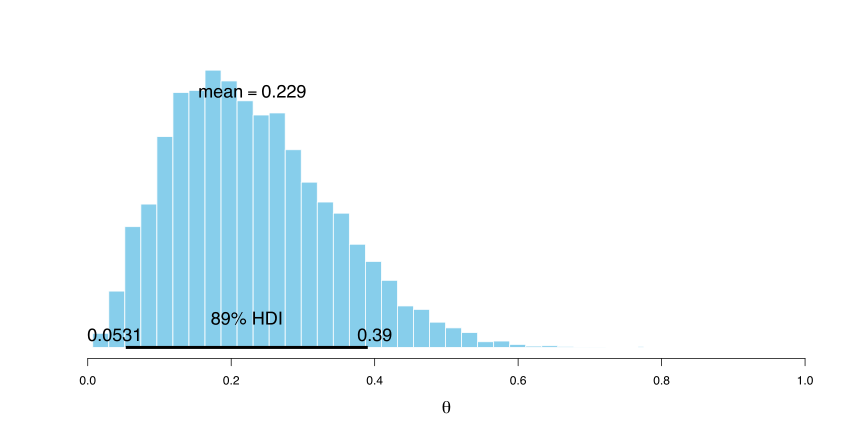Region of practical equivalence (ROPE)
Cette procédure permet d’accepter ou de rejeter une valeur nulle (null value). La région d’équivalence pratique ou region of practical equivalence (ROPE) définit un intervalle de valeurs qu’on considère comment étant “équivalentes” à la valeur nulle. La figure ci-dessous résume les issues décisions possibles issues de cette procédure (Kruschke, 2018).
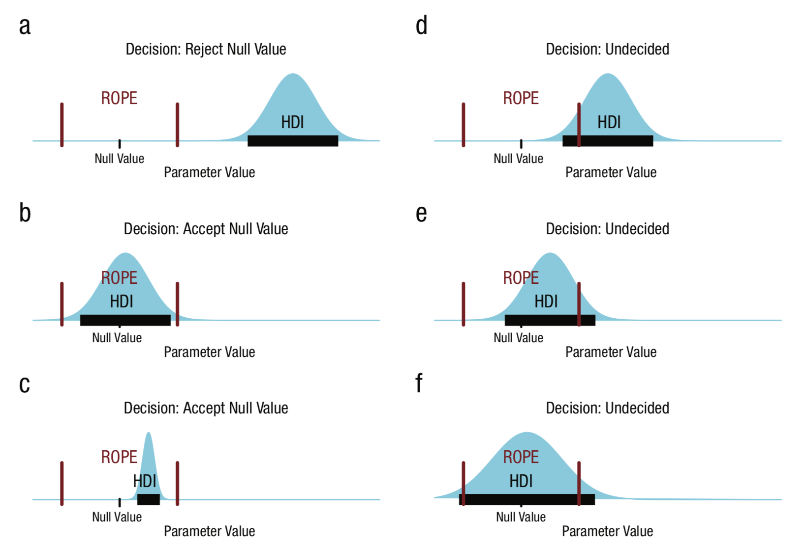Region of practical equivalence (ROPE)
La valeur du paramètre (e.g., \(\theta = 0.5\)) est rejetée si le HDI est entièrement hors de la ROPE. La valeur du paramètre (e.g., \(\theta = 0.5\)) est acceptée si le HDI est entièrement dans la ROPE. Si le HDI et la ROPE se chevauchent on ne peut pas conclure…
Comparaison de modèles
On lance une pièce 200 fois et on obtient 115 “Faces”. Est-ce que la pièce est biaisée ? Nous construisons deux modèles et essayons de savoir lequel rend le mieux compte des données.
\[\begin{eqnarray*} \left\{ \begin{array}{ll} \mathcal{M}_0: Y \sim \mathrm{Binomial}(n, \theta = 0.5) & \quad \text{La pièce n'est pas biaisée}\\ \mathcal{M}_1: Y \sim \mathrm{Binomial}(n, \theta \neq 0.5) & \quad \text{La pièce est biaisée} \end{array}\right. \end{eqnarray*}\]
Le facteur de Bayes (Bayes factor) fait le rapport des vraisemblances (marginales) des deux modèles.
\[\frac{p(\mathcal{M}_{0} | \text{data})}{p(\mathcal{M}_{1} | \text{data})} = \color{green}{\frac{p(\text{data} | \mathcal{M}_{0})}{p(\text{data} | \mathcal{M}_{1})}} \ \frac{p(\mathcal{M}_{0})}{p(\mathcal{M}_{1})}\]
Comparaison de modèles
Le facteur de Bayes (Bayes factor) fait le rapport des vraisemblances (marginales) des deux modèles.
\[\frac{p(\mathcal{M}_{0} | \text{data})}{p(\mathcal{M}_{1} | \text{data})} = \color{green}{\frac{p(\text{data} | \mathcal{M}_{0})}{p(\text{data} | \mathcal{M}_{1})}} \ \frac{p(\mathcal{M}_{0})}{p(\mathcal{M}_{1})}\]
Soit dans notre exemple :
\[BF_{01} = \frac{p(\mathcal{M}_{0} | \text{data})}{p(\mathcal{M}_{1} | \text{data})} = \frac{0.005955}{0.005} = 1.1971.\]
Le rapport de probabilités a augmenté de 20% en faveur de \(\mathcal{M}_{0}\) après avoir pris connaissance des données. Le facteur de Bayes peut également s’interpréter de la manière suivante : Les données sont 1.2 fois plus probables sous le modèle \(\mathcal{M}_{0}\) que sous le modèle \(\mathcal{M}_{1}\).
Model checking
Les deux rôles de la fonction de vraisemblance :
- C’est une fonction de \(\theta\) pour le calcul de la distribution postérieure : \(\mathcal{L}(\theta \ | \ y, n)\)
- Lorsque \(\theta\) est connu / fixé, c’est une distribution de probabilité : \(p(y \ |\ \theta, n) = \theta^y(1 - \theta)^{(n - y)}\)
On peut utiliser cette distribution de probabilité pour générer des données… !
Model checking
Deux sources d’incertitude dans ces prédictions :
- Incertitude liée au processus d’échantillonnage
-> On tire une donnée issue d’une distribution Binomiale - Incertitude sur la valeur de \(\theta\) elle-même
-> L’incertitude quant à la valeur de \(\theta\) est représentée par une distribution de probabilité (postérieure)
Prior and posterior predictive checking
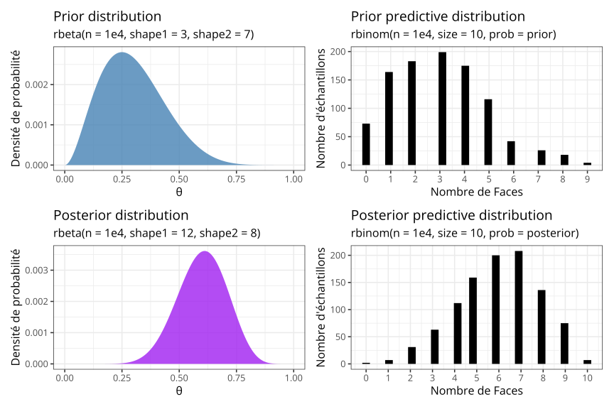Posterior predictive checking
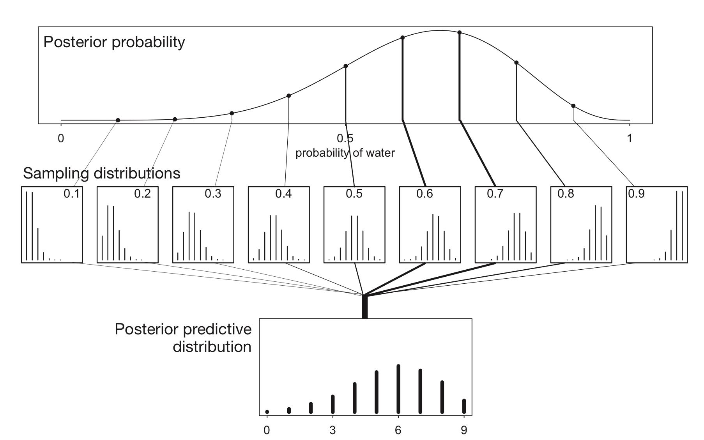Exercices
Un analyste qui travaille dans une fabrique de célèbres petits pains suédois a lu un livre qui soulevait une épineuse question… Pourquoi la tartine tombe toujours du côté du beurre ? À défaut de proposer une réponse plausible, il se propose de vérifier cette assertion. La première expérience qu’il réalise consiste à faire tomber une tartine beurrée de la hauteur d’une table. Les résultats obtenus sont accessibles dans le document suivant : Cours02/data/experiment_TP2_1.csv.
Récupérer les données
Première tâche : Ouvrir ce fichier (utiliser si besoin les fonctions getwd() et setwd()).
Questions
La tartine n’ayant que deux faces, le résultat s’apparente à un tirage sur une loi binomiale de paramètre \(\theta\) inconnu. Quelle est la distribution postérieure du paramètre \(\theta\) au vue de ces données, sachant que l’analyste n’avait aucun a priori (vous pouvez également utiliser vos propres connaissances a priori).
Calculer le HDI à 95% de la distribution postérieure et en donner une représentation graphique (indice : utilisez le package
BEST).Peut-on rejeter l’hypothèse nulle selon laquelle \(\theta = 0.5\) ? Répondez à cette question en utilisant la procédure HDI+ROPE.
Importer les observations du fichier
experiment_TP2_2.csv. Mettre à jour le modèle en utilisant le mode de la distribution postérieure calculée précédemment.
Proposition de solution - Question 1
La tartine n’ayant que deux faces, le résultat s’apparente à un tirage sur une loi binomiale de paramètre \(\theta\) inconnu. Quelle est la distribution postérieure du paramètre \(\theta\) ?
# nombre d'essais
nbTrial <- length(data$trial)
# nombre de "succès" (i.e., la tartine tombe du côté du beurre)
nbSuccess <- sum(data$value)
# taile de la grille
grid_size <- 1e3
# génère la grille
p_grid <- seq(from = 0, to = 1, length.out = grid_size)
# prior uniforme
prior <- rep(1, grid_size)
# calcul de la vraisemblance
likelihood <- dbinom(x = nbSuccess, size = nbTrial, prob = p_grid)
# calcul du posterior
posterior <- likelihood * prior / sum(likelihood * prior)Proposition de solution - Question 2
Calculer le HDI à 95% de la distribution postérieure et en donner une représentation graphique.
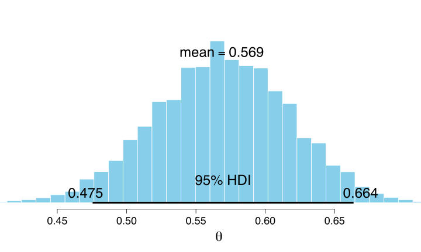Proposition de solution - Question 3
Peut-on rejeter l’hypothèse nulle selon laquelle \(\theta = 0.5\) ?
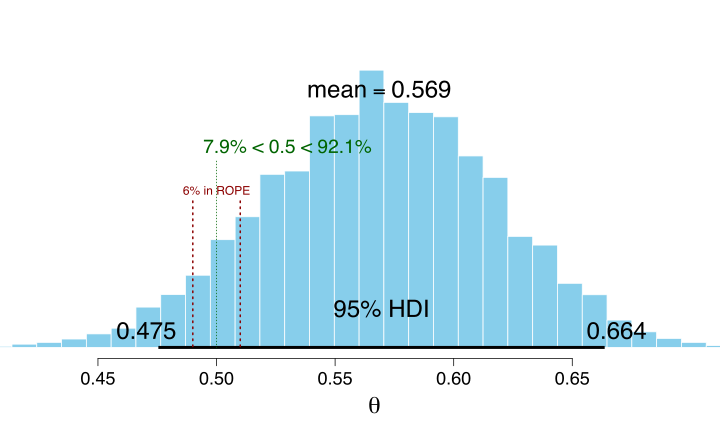Proposition de solution - Question 4
À ce stade, on ne peut pas conclure. L’analyste décide de relancer une série d’observations afin d’affiner ses résultats.
'data.frame': 500 obs. of 3 variables:
$ X : int 1 2 3 4 5 6 7 8 9 10 ...
$ trial: int 1 2 3 4 5 6 7 8 9 10 ...
$ value: int 1 1 0 1 0 0 1 1 1 0 ...Proposition de solution - Question 4
On utilise le posterior précédent comme prior de ce nouveau modèle.
mode1 <- find_mode(samples)
prior2 <- dbeta(p_grid, mode1 * (nbTrial - 2) + 1, (1 - mode1) * (nbTrial - 2) + 1)
data.frame(x = p_grid, y = prior2) %>%
ggplot(aes(x = x, y = y) ) +
geom_area(alpha = 0.8, fill = "steelblue") +
geom_line(size = 0.8) +
labs(x = expression(theta), y = "Densité de probabilité")Proposition de solution - Question 4 (suite)
likelihood2 <- dbinom(x = nbSucces2, size = nbTrial2, prob = p_grid)
posterior2 <- likelihood2 * prior2 / sum(likelihood2 * prior2)
samples2 <- sample(p_grid, prob = posterior2, size = 1e4, replace = TRUE)
plotPost(
samples2, cex = 2, cex.axis = 1.5, cex.lab = 2,
xlab = expression(theta),
ROPE = c(0.49, 0.51), compVal = 0.5
)Références

Ladislas Nalborczyk - IMSB2022